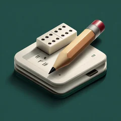

Política de privacidad
Tranca y Cuenta no recoge ningún dato.
Lo que guarda la app
Los nombres de los jugadores, la meta, las manos y el idioma se guardan solo en tu móvil, para que la partida siga donde la dejaste. Nunca salen de él: no hay cuentas, ni servidores, ni copia en la nube nuestra. Si borras la app, se borra todo.
Lo que no hay
No hay anuncios, ni estadísticas de uso, ni rastreo, ni herramientas de terceros que recojan datos. La app funciona sin conexión.
Propinas («Invítame una ronda»)
Son voluntarias y no desbloquean nada. El pago lo gestiona Apple (App Store) o Google (Google Play) con su propia política de privacidad; nosotros no recibimos tus datos de pago ni personales.
Contacto
Paul Campos Gil · support@nihongosenseiapp.com
Última actualización: 19 de octubre de 2026.
Privacy Policy
Tranca y Cuenta does not collect any data.
What the app stores
Player names, the target score, the hands and the language are stored only on your phone, so a game continues where you left it. They never leave it: there are no accounts, no servers and no cloud copy of ours. Deleting the app deletes everything.
What there isn’t
No ads, no usage analytics, no tracking and no third-party tools that collect data. The app works offline.
Tips (“Buy me a round”)
They are optional and unlock nothing. Payment is handled by Apple (App Store) or Google (Google Play) under their own privacy policies; we never receive your payment or personal data.
Contact
Paul Campos Gil · support@nihongosenseiapp.com
Last updated: October 19, 2026.